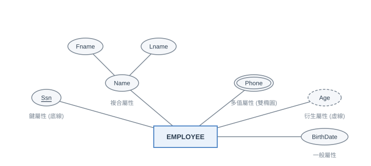
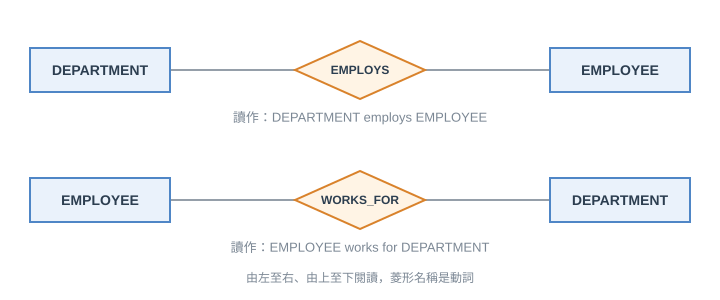
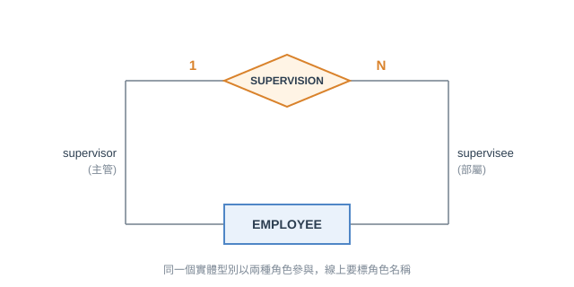
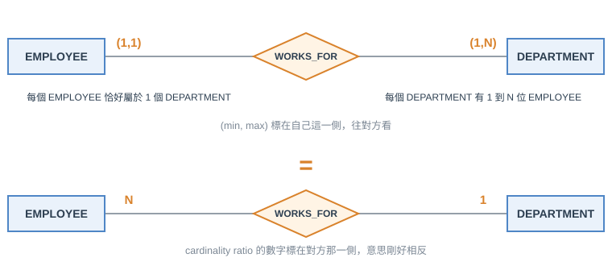
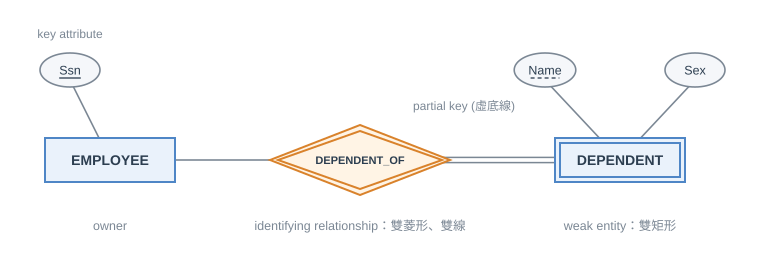
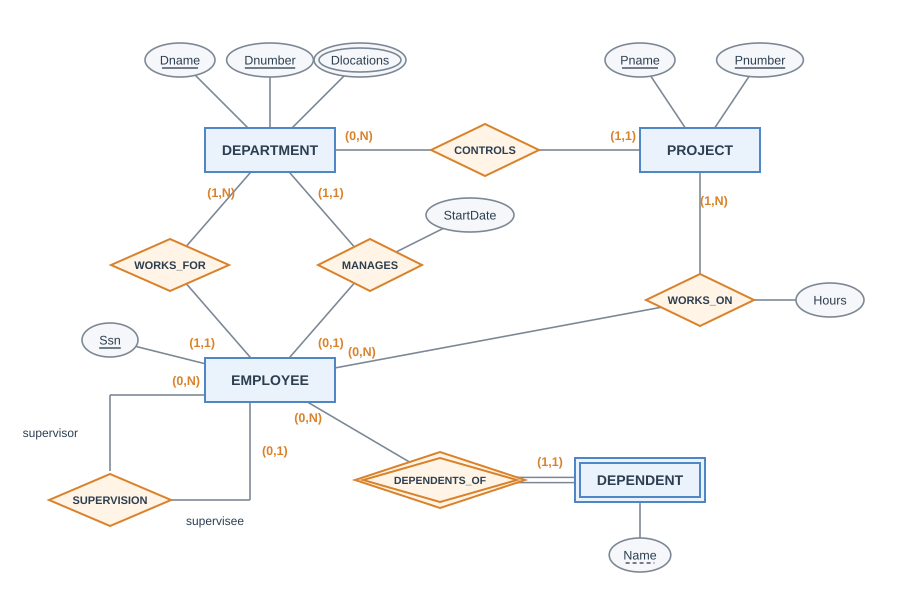
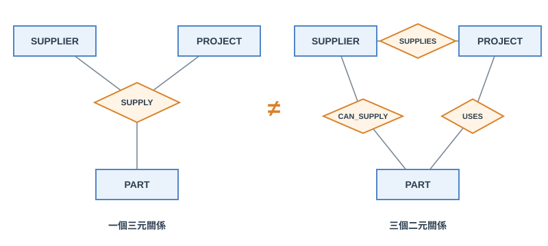

第一節 資料庫設計流程
資料庫的設計大致分成兩件事：database design 與 application design。後者是程式與介面怎麼存取資料，屬於軟體工程，本章只談前者的第一步，也就是 conceptual design：根據需求畫出 conceptual schema
常見的 conceptual design 工具有：
- ER diagram：本章
- EER diagram (Enhanced ER)：加入繼承 (specialization / generalization)，第四章
- UML class diagram：業界常用，在 ER diagram 的基礎上多了「方法」，之後會簡單提到
本章全程使用同一個範例資料庫 COMPANY，需求如下：
- 公司分成多個 DEPARTMENT，每個部門有名稱、編號、一位經理 (要記錄經理的上任日期)，且可以有多個地點
- 每個部門控制多個 PROJECT，每個專案有唯一的名稱、編號，且位在單一地點
- 要記錄每個 EMPLOYEE 的 SSN、地址、薪水、性別、生日。每位員工屬於一個部門，但可以參與多個專案，並記錄每週在每個專案的工時；還要記錄每位員工的直屬主管
- 每位員工可以有多個 DEPENDENT (眷屬)，記錄名字、性別、生日與跟員工的關係
第二節 Entity 與 Attribute
Entity、Entity Type 與 Entity Set
- entity：現實世界中一個具體的東西，例如員工 John Smith、Research 部門
- entity type：擁有相同種類 attribute 的 entity 所歸成的一類，例如 EMPLOYEE、PROJECT。它是 schema，描述長什麼樣子，ER diagram 畫的就是這個
- entity set：資料庫此刻實際存的某 type 所有 entity，是 state，會隨著新增刪除而變動
<註> entity type 是設計時決定的、entity set 是執行時變動的，兩者常常用同一個名字 (都叫 EMPLOYEE)，但意義不同。ER diagram 上畫的是 type，不會畫出任何一筆實際資料。relationship 也一樣，下一節的 relationship type 與 relationship set 是同樣的對應
Attribute 的種類

| 種類 | 意義 | 例子 | 圖上畫法 |
|---|---|---|---|
| simple | 單一、不可再分的值 | Ssn、Sex | 橢圓 |
| composite | 由幾個部分組成，可再分 | Name (Fname, Lname)、Address | 橢圓底下再接橢圓，可以多層 |
| single-valued | 每個 entity 只有一個值 | Ssn | 一般橢圓 |
| multi-valued | 一個 entity 可以有多個值 | 汽車的 Color、員工的 Phone | 雙橢圓，記為 $\{\text{Color}\}$ |
| stored / derived | derived attribute 可以由別的 attribute 算出來 | Age 可由 BirthDate 算出 | derived 用虛線橢圓 |
composite 與 multi-valued 可以任意巢狀，例如學生的 PreviousDegrees 是「multi-valued 且 composite」的 attribute，記作 $\{\text{PreviousDegrees}(\text{College}, \text{Year}, \text{Degree}, \text{Field})\}$，意思是可以有很多筆學位，每一筆都有四個部分
數學上，value set 為 $V$ 的 attribute $A$ 是一個函數 $A : E \rightarrow \mathcal{P}(V)$，$\mathcal{P}(V)$ 是 $V$ 的 power set (所有子集)。single-valued 取到的子集只有一個元素；multi-valued 可以有多個元素 (也可以是空集合，也就是沒有值)
Key Attribute
若一個 attribute 在 entity type 中每個 entity 都必須有唯一的值，它就是 key attribute，圖上在名稱底下畫底線
這裡有幾個地方跟之後的 relational schema 不一樣，容易搞混：
- ER diagram 中所有能當 key 的 attribute 都要畫底線，不是只畫其中一個。一個 entity type 可以有多個 key，例如 CAR 同時有 VehicleIdentificationNumber (VIN) 與 VehicleTagNumber，兩個都畫底線。到了 relational schema 才需要從 candidate key 中選一個當 primary key 畫底線
- key attribute 可以是 composite 的，例如 VehicleTagNumber 由 (Number, State) 一起才唯一，這整個 composite attribute 畫底線，而不是分開畫
第三節 Relationship
Relationship、Relationship Type、Degree
- relationship：把兩個以上的 entity 以一個特定意義連起來，例如「John Smith works on ProductX」
- relationship type：相同種類的 relationship 的歸類，例如 WORKS_ON。它描述的是名稱、參與的 entity type 與 constraint (schema)
- relationship set：目前資料庫實際存在的所有 relationship (state)
- degree：參與的 entity type 個數。2 個叫 binary、3 個叫 ternary，
n個叫n-ary
COMPANY 經過整理後有 6 個 binary relationship type，原本寫在 entity attribute 裡的東西 (部門的經理、員工所屬部門、員工參與的專案) 都改成 relationship：
| Relationship type | 參與的 entity type |
|---|---|
| WORKS_FOR | EMPLOYEE、DEPARTMENT |
| MANAGES | EMPLOYEE、DEPARTMENT |
| CONTROLS | DEPARTMENT、PROJECT |
| WORKS_ON | EMPLOYEE、PROJECT |
| SUPERVISION | EMPLOYEE (supervisor)、EMPLOYEE (supervisee) |
| DEPENDENTS_OF | EMPLOYEE、DEPENDENT |
<註> 同樣兩個 entity type 之間可以有不只一個 relationship type。MANAGES 與 WORKS_FOR 都在 EMPLOYEE 與 DEPARTMENT 之間，但意義不同、實際連起來的 entity 也不同 (一個部門的經理是員工，但不代表是只有經理在這個部門工作)
閱讀方向

ER diagram 中 relationship 的菱形沒有箭頭，約定俗成的讀法是由左至右、由上至下，菱形的名稱就是中間的動詞。上圖兩種寫法分別讀成「DEPARTMENT employs EMPLOYEE」與「EMPLOYEE works for DEPARTMENT」，說的是同一件事。如果把 entity 左右換位置，relationship 的名字也要跟著換成讀得通順的動詞，否則讀起來意思會相反
Recursive Relationship

同一個 entity type 在同一個 relationship 中參與兩次、扮演不同 role，叫做 recursive relationship (或 self-referencing)。SUPERVISION 就是例子：一位員工當 supervisor，另一位員工當 supervisee，每一個 relationship instance 連結的是兩位不同的員工
因為兩條線連到同一個矩形，單看圖分不出誰是誰，所以 recursive relationship 的每條線上一定要標 role name。上圖 1 對 N 的意思是：一位 supervisor 有多位 supervisee，但一位 supervisee 只有一位 supervisor
Relationship 的 Attribute
relationship 也可以有 attribute。例如員工參與專案的每週工時 Hours，它取決於 (員工, 專案) 的組合，不屬於員工也不屬於專案，所以掛在 WORKS_ON 這個 relationship 上
<註> relationship attribute 可以搬到 entity 上，是有條件的：
- M:N：不能搬，必須留在 relationship 上 (因為值由兩邊的組合決定)
- 1:N：可以搬到 N 這一側的 entity (N 側的每個 entity 只對應一個 relationship instance，所以值唯一)。例如在 WORKS_FOR 上記錄「到職日」，可以改掛在 EMPLOYEE 上
- 1:1：搬到任一側都可以。例如 MANAGES 的上任日期 StartDate 可以改掛在 DEPARTMENT 或 EMPLOYEE 上
第四節 Relationship 的 Constraint
relationship type 有兩種 constraint，常常被合稱為 structural constraint，分別規定最多與最少能參與幾次：
| Constraint | 管什麼 | 取值 | 圖上畫法 |
|---|---|---|---|
| cardinality ratio | 最多 (maximum) | 1:1、1:N (N:1)、M:N | 在線旁標 1、N、M |
| participation constraint | 最少 (minimum) | total (又叫 existence dependency)：每個 entity 都必須參與；partial：可以不參與 | total 是雙線，partial 是單線 |
這兩個 constraint 對 binary relationship 好表達，對 higher-degree relationship 就變得困難 (後面會提到)
(min, max) 標示法
另一種寫法是在每一條連線上標 (min, max)：這個 entity 至少 (min) 且至多 (max) 參與幾個 relationship instance。限制是 min ≤ max、max ≥ 1。min = 0 就等於 partial participation，min ≥ 1 就等於 total participation；不寫限制時預設 (0, n)，也就是沒有限制
這個寫法同時包含 cardinality ratio 與 participation constraint，資訊比較完整

- (min, max)：標在自己這一側的線上，往對方看。上圖上排 EMPLOYEE 旁的
(1,1)是說「每個 EMPLOYEE 恰好參與 1 個 WORKS_FOR」，也就是恰好屬於 1 個部門；DEPARTMENT 旁的(1,N)是說「每個 DEPARTMENT 有 1 到 N 位員工」 - cardinality ratio：標在對方那一側。下排 EMPLOYEE 旁的
N是說「一個 DEPARTMENT 對應至多N個 EMPLOYEE」，DEPARTMENT 旁的1是說「一個 EMPLOYEE 對應至多 1 個 DEPARTMENT」
兩排畫的是同一件事。要換算時，只看 max，並把兩側交換：
| 兩側的 max | Cardinality ratio | 例子 |
|---|---|---|
| EMPLOYEE 側 1、DEPARTMENT 側 N | EMPLOYEE 旁標 N、DEPARTMENT 旁標 1，記作 N:1 | WORKS_FOR |
| 兩側都是 1 | 1:1 | MANAGES |
| 兩側都是 N | M:N | WORKS_ON |
<註> 一個簡單的判斷法：看到 (min, max) 時，把數字讀成「緊鄰的這個 entity 自己參與幾次」；看到 cardinality ratio 時，把數字讀成「對方 entity 的數量」。另外 min 只有在 (min, max) 才看得到，cardinality ratio 本身看不出是 total 還是 partial participation
COMPANY 的 Constraint
依 COMPANY 的需求逐條寫成 (min, max)，這些 constraint 是由現實世界的規則決定的：
| Relationship | 需求 | (min, max) |
|---|---|---|
| MANAGES | 一個部門恰有一位經理；一位員工最多管理一個部門 | DEPARTMENT (1,1)、EMPLOYEE (0,1) |
| WORKS_FOR | 一位員工恰屬於一個部門；一個部門可以有任意位員工 | EMPLOYEE (1,1)、DEPARTMENT (1,N) |
第五節 Weak Entity Type

weak entity 要識別時需要兩個東西合在一起：
- weak entity 自己的 partial key：在同一個 owner 底下可以唯一識別的 attribute
- 它所連結的 owner entity
以 DEPENDENT 為例，眷屬的 Name 只在同一位員工底下才會唯一 (不同員工可以各有一個叫 Mary 的眷屬)，所以 Name 是 partial key，要搭配 EMPLOYEE 的 Ssn 才能識別一位眷屬。圖上 weak entity 用雙矩形、identifying relationship 用雙菱形，partial key 畫虛線底線，weak entity 與 identifying relationship 之間是雙線 (total participation，因為 weak entity 一定要有 owner 才存在，所以它的限制通常是 (1,1))
| 名詞 | 在哪裡出現 | 意義 |
|---|---|---|
| partial key | ER diagram (weak entity) | 單獨不能識別，要搭配 owner 的 key 才唯一，畫虛線底線 |
| primary key | relational schema | 從 candidate key 中選出來唯一識別每一列的那個 |
| foreign key | relational schema | 參考到另一個表格的 primary key，用來表示 relationship |
<註> 轉成 relational schema 時，weak entity 的 primary key 就是「owner 的 primary key (成為 foreign key) + partial key」，所以 partial key 最後會跟另外兩個混在一起出現，要記得它們在 ER 階段的區別
第六節 COMPANY 的 ER Diagram

這張圖把前面的概念全部放在一起 (為了容易閱讀，只畫出主要 attribute)。逐項對照：
- key attribute (底線)：Dname、Dnumber (部門名稱與編號都是唯一的，所以兩個都畫)、Pname、Pnumber、Ssn
- multi-valued attribute (雙橢圓)：Dlocations，因為一個部門可以有多個地點
- relationship attribute：StartDate 掛在 MANAGES，Hours 掛在 WORKS_ON
- recursive relationship：SUPERVISION，兩條線標 supervisor 與 supervisee 的 role name
- weak entity：DEPENDENT，透過雙菱形 DEPENDENTS_OF 依附 EMPLOYEE，且為 total participation
(min, max) 的值依需求而定：
| Relationship | 一側 | 另一側 | Cardinality ratio |
|---|---|---|---|
| WORKS_FOR | EMPLOYEE (1,1) |
DEPARTMENT (1,N) |
N:1 |
| MANAGES | DEPARTMENT (1,1) |
EMPLOYEE (0,1) |
1:1 |
| CONTROLS | PROJECT (1,1) |
DEPARTMENT (0,N) |
1:N |
| WORKS_ON | EMPLOYEE (0,N) |
PROJECT (1,N) |
M:N |
| SUPERVISION | supervisor (0,N) |
supervisee (0,1) |
1:N |
| DEPENDENTS_OF | EMPLOYEE (0,N) |
DEPENDENT (1,1) |
1:N |
第七節 UML Class Diagram
業界常用 UML class diagram 表達同樣的概念，與 ER diagram 的對應是：
| ER diagram | UML class diagram |
|---|---|
| entity type (矩形) | class，圓角方框分三格：名稱、attribute、operation |
| relationship (菱形) | association，只有一條線，沒有菱形 |
| (min, max) | 標在線端的 multiplicity |
第三格的 operation 是基本 ER Model 沒有的東西 (ER 只管資料，不管行為)，這是兩者最大的差別。UML 的細部符號在各家工具之間不盡相同
第八節 Higher-Degree Relationship
degree 大於 2 的 relationship 叫 higher-degree relationship，最常見的是 ternary relationship。
Ternary Relationship ≠ 三個 Binary Relationship

這是整章最常考也最容易搞混的觀念。左圖 SUPPLY 的一個 instance 是一個 三元組 $(s, j, p)$：供應商 $s$ 為專案 $j$ 供應零件 $p$。右圖三個 binary relationship 各自只記錄兩兩之間的關係，少了三個一起的資訊。
舉個具體例子，ternary relationship SUPPLY 的內容是 $\{(s_1, j_1, p_1),\ (s_1, j_2, p_2),\ (s_2, j_1, p_2)\}$，把它拆成三個 binary relationship：
- CAN_SUPPLY (SUPPLIER, PART)：$(s_1, p_1)$、$(s_1, p_2)$、$(s_2, p_2)$
- USES (PROJECT, PART)：$(j_1, p_1)$、$(j_2, p_2)$、$(j_1, p_2)$
- SUPPLIES (SUPPLIER, PROJECT)：$(s_1, j_1)$、$(s_1, j_2)$、$(s_2, j_1)$
這時候只看三個 binary relationship，會推出 $s_1$ 供應 $j_1$、$j_1$ 用 $p_2$、$s_1$ 能供應 $p_2$，似乎可以得到 $(s_1, j_1, p_2)$，但它並不在原本的 SUPPLY 裡。三個 binary relationship 無法還原出原本的 ternary relationship，所以兩種設計代表不同的資訊，不能互相取代。需求如果兩種資訊都需要，兩種 relationship 可以同時放在 schema 中，各自代表不同的意義
另外幾個補充：
- 如果某個 binary relationship 永遠可以從 higher-degree relationship 推導出來，它就是多餘的。例如 TAUGHT_DURING 可以從 ternary relationship OFFERS (COURSE、SEMESTER、INSTRUCTOR) 推出，就可以省略
- 三個 binary relationship 只有在額外 constraint 下才能取代 ternary relationship，例如 CAN_TEACH 是 1:1 的時候，OFFERS 這個 ternary relationship 可以不要
- 如果資料模型允許 weak entity 有多個 identifying relationship，有些 ternary relationship 也可以用 weak entity 表示
Higher-Degree Relationship 的 Constraint
degree 大於 2 的 relationship，constraint 的表達比較困難，也容易有歧義。
- 標在線上的
(min, max)仍然有意義，但不足以完整描述 constraint - 因此線上會再標 1、M、N 表示額外的 constraint：標 M 或 N 代表沒有限制；標 1 代表固定其他參與者的組合後，這個 entity 最多參與一次
以 1:M:N 的 SUPPLY (SUPPLIER : 1、PROJECT : M、PART : N) 為例，SUPPLIER 旁標 1 的意思是：每一個 (PROJECT, PART) 組合最多只會由一個 SUPPLIER 供應，也就是同一個專案的同一種零件不會有兩個供應商，所以 relationship set 中的 $(j, p)$ 組合不會重複出現。ternary relationship 要把 (min, max) 與 1/M/N 兩種標示都用上才能描述完整
總結
- ER Model 的三個基本概念：entity (含 attribute)、relationship、constraint。ER diagram 畫的是 schema (type)，不是資料 (set)
- 符號：矩形是 entity、橢圓是 attribute (雙橢圓 multi-valued、虛線橢圓 derived)、菱形是 relationship；雙矩形與雙菱形是 weak entity 與 identifying relationship；雙線是 total participation；底線是 key、虛線底線是 partial key
參考文獻
R. Elmasri and S. B. Navathe, Fundamentals of Database Systems, 7th Ed., Pearson, 2016.